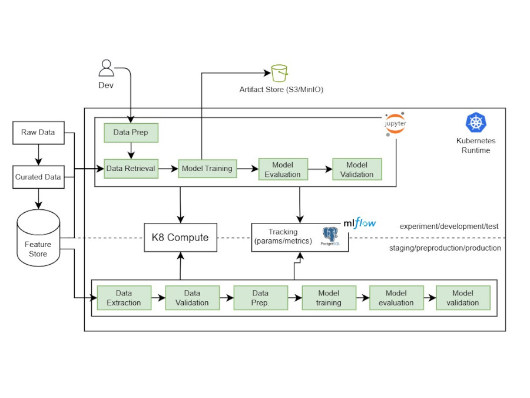
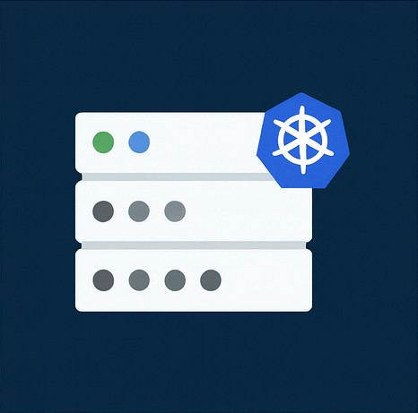
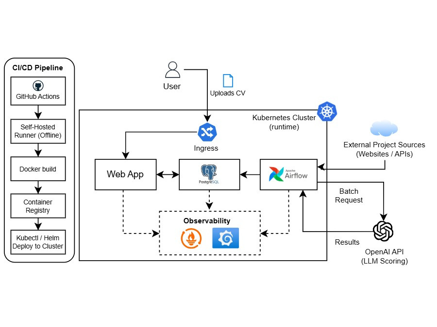
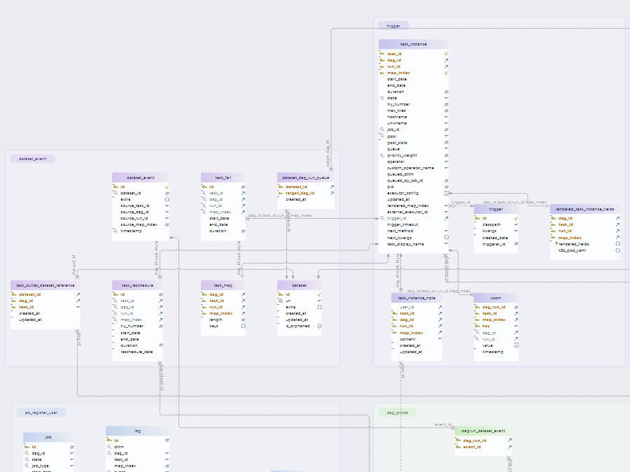
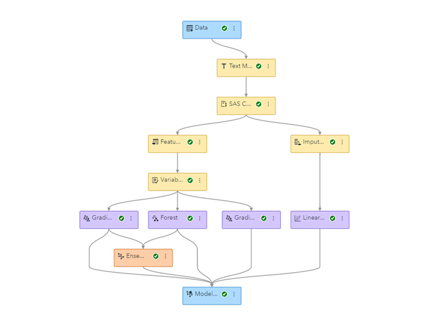
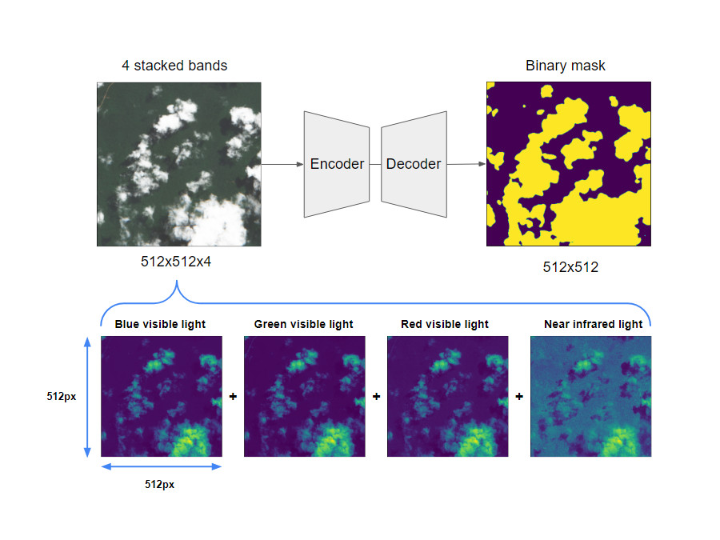

Selected projects showcasing ML & data platform engineering, MLOps, and automation.

Customer-Churn (Showcase)
Freelance | Role: Platform & DevOps Engineer
Self-initiated showcase project (no client data). Built a reproducible pipeline demonstrating churn prediction with MLflow tracking, testing, and containerized deployment. Includes a reproducible MLOps-style pipeline with tracked experiments and automated deployment.
Outcome: Reproducible training pipeline with CI/CD, MLflow tracking, and automated artifact management.
Python
FastAPI
MLflow
Docker
Kubernetes
GitHub Actions
Airflow
PostgreSQL
Prometheus
Grafana
ArgoCD

SAS Viya Platform on Kubernetes
CBTW | Role: Data & Platform Engineer (Viya Platform Team)
Provisioned, operated, and extended a containerized SAS Viya environment on Kubernetes as a SaaS offering; responsible for stability, maintenance, troubleshooting, and platform evolution. Provisioned and operated a Kubernetes-based analytics platform designed for MLOps workloads with monitoring, scaling, and incident response.
Outcome: Reliable, scalable Viya platform with documented runbooks and fast incident resolution.
SAS Viya
Kubernetes
Docker
Helm
Prometheus
Grafana
GitLab CI/CD
SAS 9.4 Platform Operations
Insurance | Role: Data & Platform Engineer
Ran a production SAS 9.4 platform for risk and reporting workloads, including hotfix/security patch rollouts and incident analysis with business teams. Includes observability, release management, and automated workflow operations for a regulated analytics platform.
Outcome: Stable, audit-ready platform with fewer production incidents.
SAS 9.4
Base SAS
SAS Macros
Linux
Monitoring
Platform Operations

Automated Candidate Scoring Pipeline (Showcase)
Freelance | Role: Platform & DevOps Engineer
Self-initiated showcase project (no client data). Built a reproducible pipeline demonstrating automated data collection and analysis of freelance project postings with an LLM scoring how well a profile matches each listing, plus API integration. Includes a reproducible MLOps-style pipeline with tracked experiments and automated deployment.
Outcome: Fully automated workflow from data collection to AI-based matching with CI/CD and observability, including an integrated web app and API.
Python
MLflow
FastAPI
Docker
GitHub Actions
PostgreSQL
Automated Account Statement Generation
Bank | Role: SAS Developer
Digitized a manual account-statement process in SAS 9.4: co-designed with business/architecture and built an STP app with input UI, business logic, and SAS code.
Outcome: Cycle time reduced from weeks to days and ready for pilot and production rollout.
SAS 9.4
SAS Stored Processes (STP)
Base SAS
SAS Macros
SQL
Web UI

Data Model Migration and Enhancement
Insurance | Role: Data Engineer
Migrated existing data model and ETL workflows from AWS Glue to PostgreSQL. Extended the data model to support new reporting needs and created Tableau dashboards for clearer and faster data insights.
Outcome: Reduced infrastructure costs and improved data processing speed. Resolved recurring data integrity issues.
AWS Glue
PostgreSQL
SQL
Tableau
Talend
ETL Pipelines
Data Warehousing

Data Ingestion Refactor
CBTW | Role: Data & ML Engineer
Rebuilt ingestion pipelines with validation and error recovery. Reduced latency and improved reliability across all data jobs. Prepared the platform for ML automation and production-ready pipelines.
Python
SAS
SAS Viya
ETL Pipelines
Data Validation
Data Quality

Migration SAS 9.4 -> SAS Viya
Insurance | Role: Migration Engineer / SAS Modernization
Led migration from SAS 9.4 to SAS Viya and modernized existing workloads for the target platform. Prepared the platform for ML automation and production-ready pipelines.
Outcome: Viya target architecture with migrated core processes and clear cutover steps.
SAS 9.4
SAS Viya
Docker
Kubernetes
Platform Modernization
Migration

Cloud Detection (Competition)
Freelance | Role: Data & ML Engineer
Build a deep learning model to detect clouds in satellite images using Encoder-Decoder architecture with resnet, resnext & efficientnet backbones.
Outcome: Achieved top 3% ranking on DrivenData.
Python
TensorFlow
Computer Vision
Satellite Imagery
Remote Sensing
Keras